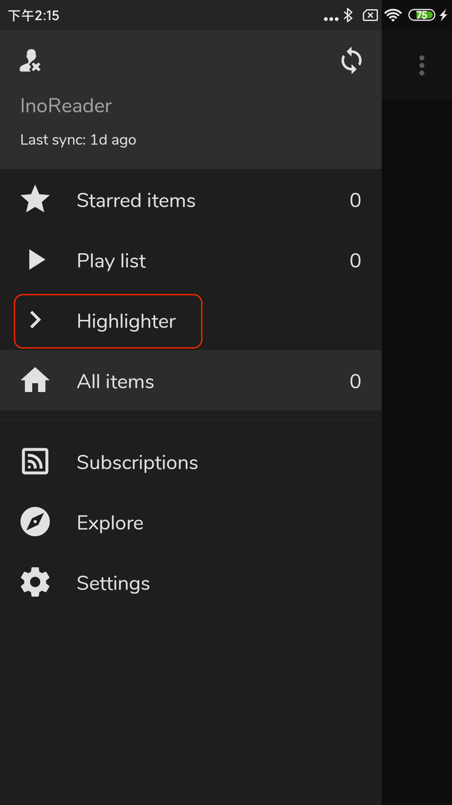

FeedMe 翻到底才挖到的 5 个隐藏设置 — 90% 的人只用来刷 RSS
FeedMe 不只是一个 RSS 阅读器。从电子墨水屏的分动作条组合拳，到正则拦截整类 Banner 的图片黑科技，这些藏在设置深层的冷门功能，把一个工具用成了重度阅读者的专属工作台。
你以为 FeedMe官网 上那个被宣传为「轻量 RSS 阅读器」的东西就只是用来刷列表？打开订阅源、划两下列表、点开文章看完划走——没错，这是 90% 的人对它的全部认知。但我把设置菜单从顶翻到底、又从底翻回顶折腾了两周，发现 FeedMe 藏着好几个官方几乎不宣传、翻遍设置也得眯着眼才能摸到的冷门功能。它们不是"锦上添花"的花活，是真的在特定场景下能省你几分钟甚至几小时的操作。
今天这篇就把这五个压箱底的设置挖出来，按"在哪、怎么开、什么场景真有用"的结构一一拆解。
电子墨水屏的完整适配方案——不止是选一个主题
FeedMe 的设置 → 界面 → 主题里有个"电子墨水屏"主题，很多人知道它，但选完就完事了。实际上单一主题只是第一步，完整适配得把四个设置项串起来开成组合拳。
第一步当然是固定主题为"电子墨水屏"，纯黑纯白、去除所有非必要视觉元素。然后去设置 → 操纵里开"分动作条"——把所有导航按钮固定在底部，用点按代替划动手势，这对墨水屏来说至关重要，划一下就刷新一次，点一下也刷新但动作更可控。第三步是音量键翻页，还是在操纵里开，按个人喜好设好翻页方向和百分比，比如我设成音量下翻下一页的 80%。最后还有个菜单编辑的小技巧——列表页或文章页长按顶部标题栏，把返回、向上、向下这些按钮移到顶部动作条上，用点按代替划动。

这一套组合拳下来，墨水屏上的阅读体验跟手机上的 FeedMe 完全是两个东西。如果你手里有 Boox、文石、墨案之类的设备，这四个设置串起来开一次，用一周你会发现回不去了。
Keep Unread——那个"服务端已读、本地钉住"的临时保护
Feedly 或者 Inoreader 用户大概都有过这种崩溃时刻：某个分类太久没刷，Feedly 自动把一批旧文章标记已读、从列表里清掉了——但你明明还没来得及看。回去翻已读历史？列表能把人淹死。
FeedMe 藏了一个专门对付这种场景的开关叫 keep unread，作用简单粗暴：我手动把某篇文章钉住之后，不管服务端后来怎么标记它为已读，本地继续当未读显示。入口不太显眼，可能在文章页长按菜单里，也可能在订阅源设置的过滤器相关位置，找不到就去设置里搜"keep"或"unread"。
这个功能有几个硬边界必须清楚：它只本地生效，不会同步到服务端；清除 FeedMe 缓存或卸载重装后标记直接丢，因为就是写在本地数据库里的一条记录；退出 App 重进也可能丢失，FeedMe文档里明确写了"temporary use keep unread only"。
所以 keep unread 是个应急工具，不是日常工作流。我的用法是三类分工：加星负责想留着细读的重要文章（服务端同步、跨设备不掉），Pocket 或 Evernote 负责想跨设备带走归档的文章，keep unread 只负责"我刚才不小心标已读了、先钉一下别让它消失"。三类各司其职，别让 keep unread 堆到几百篇，哪天清缓存就一锅端。

图片拦截的正则黑科技——3.13 版本才加的大招
订阅源里的 Banner 广告、社交分享图标、网站换了 CDN 域名的同款 Logo——这些跟文章内容完全无关的图片，既占加载时间又污染视觉。FeedMe 的图片拦截功能是我见过同类 RSS 里做最细的。
最基础的用法是文章列表页长按一张带缩略图的图片，弹出菜单里点"拦截图片"，这张图就进了拦截列表。但 FeedMe 不是只存一个 URL——它识别图片内容本身，URL 不同但内容相同的图片会被自动识别为同一张，拦截一次全变体生效。这意味着网站换了 CDN 域名、换了路径、加了查询参数，只要 Banner 还是那张，就会被跳过。
到 3.13 版本又加了正则表达式——这才是真正的大招。如果发现拦截了十多张都是同一个网站的类似 Banner（banner-1.png、banner-2.png、banner-home.png），用正则 banner-.*\.png 一次搞定整类，然后把那些单独拦的删掉。
FeedMe 硬限制最多 32 张拦截图，但配合正则完全够用。管理入口在文章列表页更多菜单里，也可以在设置里搜"拦截图片"直达。建议定期清一下——网站改版后旧 Banner 消失了，拦截列表里的死条目会拖同步速度。
设置备份——选 Android 10+ 文件选择器反而更方便
FeedMe 没有云备份，所有设置存在本地数据库里。换手机时去官方下载拿一份最新版装好，或者重装 App，手动导出再恢复是必经之路。3.13 版本开始适配了 Android 10 的分区存储，旧版可以自定义备份路径，新版统一让系统文件选择器处理——你手动选一个位置，FeedMe 写进去。
好处是 FeedMe 不需要请求危险的存储权限。备份文件里包含几乎所有东西：设置项、订阅源配置、过滤器规则、荧光标签配置、稍后读服务（Pocket/Evernote）的 OAuth token、可选的 OPML 订阅清单。不包含文章缓存（太大），加星和标签因为存云服务所以换设备重新登录账号自动同步。
恢复的时候有个关键步骤别漏：先正常走完初始化、至少配好一个订阅源，再导备份。FeedMe 会自动恢复大部分设置，但 Pocket、Evernote 这些 OAuth token 可能需要重新授权，AI API Key 建议恢复后也检查一下。我自己的换手机流程是：旧手机选云盘同步目录存备份、同时导出 OPML、确保最后一次同步把加星状态推到 Feedly 云端；新手机装 FeedMe、初始化只配一个 Feedly 账号、立刻导备份、检查 OAuth 授权、完整同步一次重新下载图片。这样下来连过滤器规则和订阅源单独的 Mobilizer 设置都不用重配。
强调色覆盖——全局之外的隐藏入口
FeedMe 五套主题之上还有一层强调色自定义——高亮选中、操作按钮、已加星标记、未读指示这些元素的颜色。全局设置在设置 → 界面 → 强调色，从预设面板里挑，覆盖常见色系。
但 FeedMe 还有个隐藏入口叫订阅源级别的强调色覆盖——部分版本支持，在单个订阅源的设置里能找到。这个入口不显眼，但对订阅源分类特别有用：比如把所有技术博客的强调色设成蓝色、把资讯媒体设成橙色、把小众兴趣社区设成紫色，扫一眼列表就能按颜色分组，不用盯着订阅源名字看。
强调色覆盖是在全局强调色之上的叠加——没设覆盖的订阅源用全局，设了的用自己的。如果你订阅源数量多到上百，这个设置能帮你做一层轻量级的视觉分组，比手动分类文件夹省心多了。
一个提醒：别让隐藏功能变成新负担
上面这五个设置，没有一个是默认开启的，也没有一个在 FeedMe 的主界面上有入口——全在设置的深层菜单里等着被翻出来。这本身说明了 FeedMe 的产品哲学：默认给你干净的阅读界面，想折腾的人自己挖。
但折腾归折腾，keep unread 别堆、拦截列表别满、强调色覆盖别给每个订阅源都设上（设得太乱反而失去了分组意义）。工具是为人服务的，别反过来让设置项变成你每天要维护的负担。
FeedMe 的配置资料我同步到了GitHub、Gitee、GitCode三个仓库，不管你用哪个 Git 服务都能拉到。